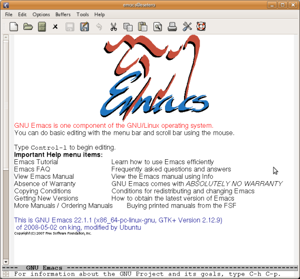
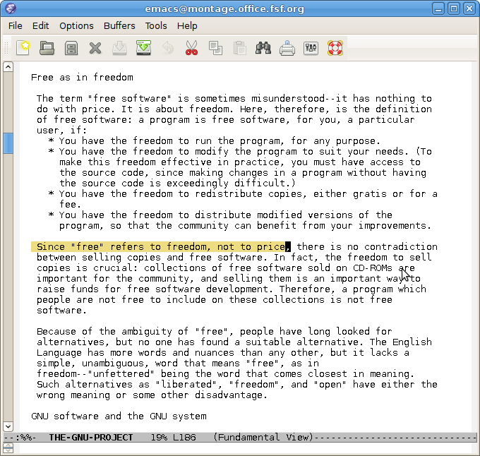

Emacs is a very powerful text editor. You can invoke Emacs by typing its name at the command line.
$ emacs
If you are using a typical graphics-based GNU/Linux distribution, this command opens a new window with Emacs running in that new window.

Due to its versatility, many users find themselves resorting to Emacs constantly, and they open an Emacs session soon after turning their computer on and leave it open for the duration of their computing endeavor. If you plan to have Emacs running for an extended time, it is helpful to run Emacs in the background or another virtual terminal so that the command line becomes available for another command.
$ emacs &
You may occasionally want to run Emacs directly in the terminal window. Use the -nw (no window) option for this.
$ emacs -nw
You can load a file for editing at the time you start Emacs by giving the file name after the emacs command.
$ emacs filename

Once Emacs is running, there are a number of basic editing commands you can use. In most of this book, outside of this Emacs chapter, we use a notation like ctrl + x to denote depressing the Ctrl (Control) key, then pressing the x key while Ctrl is depressed, then releasing both keys. In this Emacs chapter, we employ the notation used in the Emacs documentation, which abbreviates ctrl + x as C-x.
The command C-x C-f (press the Ctrl key, press and release x, press and release f, release Ctrl) loads a file on disk into an Emacs buffer (an Emacs working area) for editing. You are prompted for the name of the file to load. You may then make changes to the buffer by typing and by using other Emacs commands. The buffer is not saved to a file on disk until you specifically request it with, for example, the C-x C-s command.
The command C-x C-s saves the current Emacs buffer to disk as the currently named file. The name of the file is located on a bar at the bottom of the window.
This command exits Emacs. If buffers remain that are unsaved, Emacs asks you whether you want to save them.
The command C-h t (press the Ctrl key, press and release h, release Ctrl, press and release t) starts the Emacs tutorial. This takes you step-by-step through some basic Emacs commands.
This command offers a number of help options.
The command C-k kills (deletes) the current line in the current buffer from the cursor to the end of the line.
This command "yanks back" the most recently killed line or set of lines and pastes it into the current cursor position.
Emacs has major modes for editing a variety of common and not-so-common file types, such as plain text, shell scripts, python language scripts, and so on. Each mode redefines the effect of hitting the Tab key, for example, to do the most appropriate thing for a particular file type. These modes start automatically for many types of files, based on the file extension or the first line in the file.
Emacs is extensible. You can program it to behave as you like, for example by using the inbuilt, easy to learn scripting language Emacs Lisp. See the Emacs documentation for more about this.
Emacs is well documented in free sources. Type info emacs at the command line (or C-h r from within Emacs) to read the full official documentation. There is also an abbreviated manual page (type man emacs at the command line). For beginners, the best way to start learning Emacs is the inbuilt interactive tutorial mentioned above.
There has been error in communication with Booktype server. Not sure right now where is the problem.
You should refresh this page.